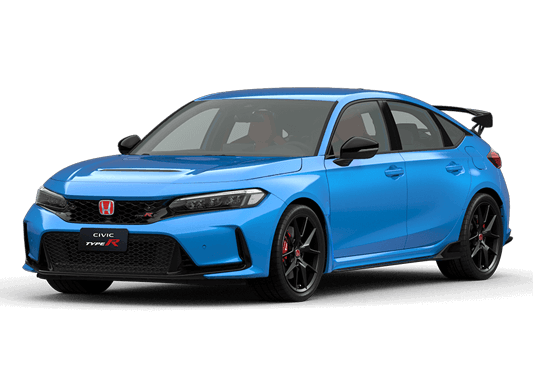
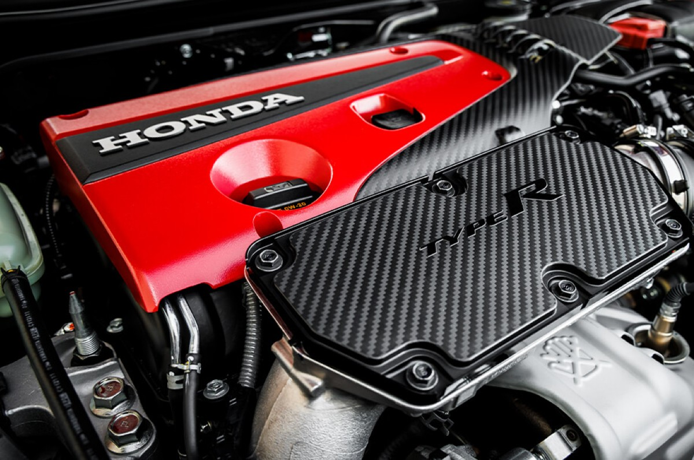
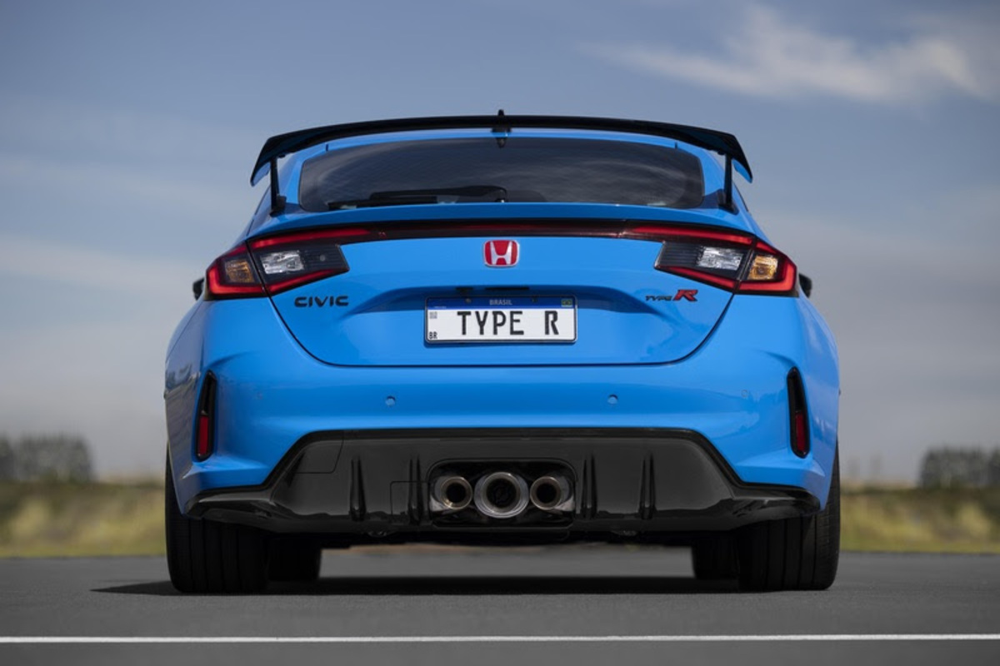
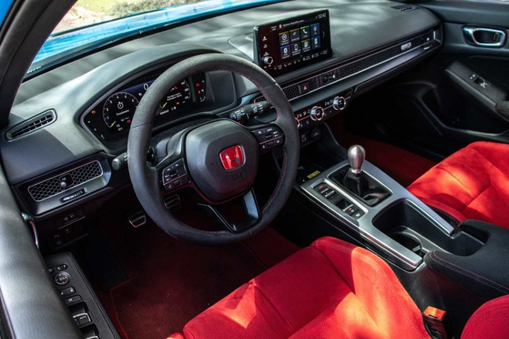

O Honda Civic Type R 2024 é a mais nova geração de um dos carros esportivos mais respeitados do mundo. Projetado para entusiastas, ele combina potência, aerodinâmica avançada e tecnologia de ponta, tornando-se uma referência no segmento.
Inspirado nas pistas, mas totalmente utilizável no dia a dia, o novo Type R continua a tradição da Honda de criar máquinas de alto desempenho que entregam emoção ao volante.
✔️ Motor 2.0L Turbo com 320 cv
✔️ Câmbio manual de 6 marchas com rev-match
✔️ Aerodinâmica aprimorada para melhor estabilidade
✔️ Interior esportivo com bancos em Alcântara vermelho
O resultado? Um carro que não apenas impressiona nas ruas, mas também domina as pistas.

O Civic Type R 2024 foi desenvolvido para oferecer desempenho máximo, seja em um track day ou em uma estrada sinuosa. Cada componente foi refinado para proporcionar a melhor experiência ao volante.
📌 Motor: 2.0L VTEC Turbo de 4 cilindros
📌 Potência: Aproximadamente 320 cv (varia conforme o mercado)
📌 Torque: 420 Nm
📌 Transmissão: Manual de 6 marchas com sistema rev-match
📌 Tração: Dianteira (FWD) com diferencial de deslizamento limitado
📌 Aceleração 0-100 km/h: 5,4 segundos
📌 Velocidade máxima: 275 km/h
A Honda aprimorou o sistema de resfriamento e melhorou a eficiência da aerodinâmica para garantir um desempenho ainda mais afiado, permitindo que o Type R entregue potência de forma linear e precisa.

Nada como ver o Honda Civic Type R 2024 em ação. Cada ângulo do carro reflete sua essência esportiva e agressiva.
Destaques visuais:✅ Aerofólio traseiro de alta performance
✅ Rodas de 19 polegadas com pneus Michelin Pilot Sport 4S
✅ Escape triplo central com ronco esportivo
✅ Interior com detalhes em fibra de carbono e iluminação vermelha

Seja em movimento ou parado, o Type R sempre impressiona. Veja as imagens e descubra por que ele é um ícone.
Quer saber mais sobre o Honda Civic Type R 2024? Entre em contato para descobrir mais detalhes sobre o carro, curiosidades e onde você pode vê-lo de perto.
📩 E-mail: contato@hondatyper.com
📍 Endereço: Concessionárias Honda Type R
📞 Telefone: (XX) XXXX-XXXX
Siga-nos nas redes sociais para acompanhar novidades, eventos e muito mais! 🚀🏎️